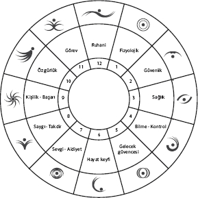
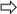

Genel kaygı
temizliği
Hayatınızdaki 10 kötü olayı bilinçaltınızdan tüm parçalarıyla temizlerseniz, hayat algınız çok değişecektir. Ama sadece 10 travmatik olay, hayatı boyunca kötü şeyler yaşamış birini bir anda “Pollyanna” yapmaya yetmeyebilir. O yüzden gelin, 10 büyük değil, binlerce küçük olayın yarattığı kaygılarımıza, endişelerimize, korkularımıza doğrudan saldıralım .
.
Bunu yapmak için, ilk önce kısa bir tekrar yapalım. İlk kitabımda bizi motive eden ana ihtiyaçları 12 farklı gruba ayırmıştık. Bu ihtiyaç listesinin aklımızda daha kolay kalması açısından her bir ihtiyacı NeuroFormat® saatindeki saatlere iliştirmiştik.

| Temel ihtiyaçlar |
| • Fizyolojik ihtiyaçlar |
• Güvenlik |
| • Sağlık |
• Bilmek, kontrol etmek |
| • Gelecek güvencesi |
• Hayat keyfi |
| • Sevgi ve ait olma |
• Saygı, takdir görmek |
| • Kişilik, başarı |
• Özgürlük |
| • Görevini yerine getirmek |
• Ruhani ihtiyaçlar |
Temel korkular
Aslında bilmemiz gereken şu ki, bizim temel korkularımız 12 temel ihtiyacımıza yapılan tehditlerdir.
• Fizyolojik ihtiyaçların karşılanmaması
• Şiddet ve ölüm
• Sağlığı kaybetmek
• Bilmemek, kontrol edememek
• Gelecek güvencemizi kaybetmek
• Keyif aldığımız ürünleri, aktiviteleri kaybetmek
• Yalnız ve sevgisiz kalmak
• Saygı, takdir görmemek
• Başarısız olmak
• Özgürlüğümüzü kaybetmek
• Görevlerimizi yerine getirememek
• Kötü, günahkâr insan olmak
Mesela para kaybetmek, işten atılmak, derslerimizde kötü not almak gibi durumlar aslında kendi başlarına hiçbir korku yaratamaz. Aslında biz işsiz kalmaktan ya da para kaybetmekten korkmuyoruz. İşsiz kalırsak hayatımızda olacaklardan korkuyoruz. Temel olmayan her korku, 12 temel korkudan bazılarını tetiklediğinden kaygı yaratıyor.
Mesela, derslerinde başarısız olmaktan korkan birinin asıl korkuları aşağıdaki gibi olacaktır.
• Fizyolojik ihtiyaçların karşılanmaması
• Şiddet ve ölüm
• Sağlığı kaybetmek
• Bilmemek, kontrol edememek  Hayatının kontrol dışında olduğunu hissettiği için.
• Gelecek güvencemizi kaybetmek İyi bir bölümden ve üniversiteden mezun olma şansını kaçıracağı için.
• Keyif aldığımız ürünleri, aktiviteleri kaybetmek Ders çalışmak zorunda kalacağı ve keyif alacağı zamanı kaybedeceği için.
• Yalnız ve sevgisiz kalmak Anne-babasının sevgisini kaybedebileceği için.
• Saygı, takdir görmemek Kötü notlar alarak herkese rezil olacağı için.
• Başarısız olmak Kendi kendini hayatta başarısız hissedeceği için.
• Özgürlüğümüzü kaybetmek Belki, cezalı bir şekilde odasında ders çalışmak zorunda kalacağı için.
• Görevini yerine getirememek Anne babasının ona verdiği tek görevi yetiremediği için.
• Kötü, günahkâr insan olmak
Yukarıda sadece tetiklenmesi olası korkuları bulmaya çalıştık. Ancak, bu tüm korkuların da tetikleneceği anlamına gelmez. Eğer yukarıdaki temel korkular tetiklenmeseydi, başarısız olmak bu öğrencinin umurunda dahi olmazdı. Zaten, okulu fazla umursamayan öğrencilerin inançlarına bakarsanız, onların başarısız olmaktan neden etkilenmediğini bulabilirsiniz.
NeuroFormat® sistemiyle yapacağımız kaygı temizliğinin en kritik kısmı, üzerinde çalışacağımız OLUMSUZ ifadenin oluşturulması. Ne kadar başarılı olduğumuzu, kullanacağımız OLUMSUZ ifadenin ne kadar KÖTÜ DUYGU yaratabileceği belirleyecek. Ne kadar kötü hissedebilirsek o kadar fazla şey temizleyeceğiz. Şimdi daha etkili OLUMSUZ ifadeleri nasıl oluşturacağımızı görelim.
Kaygılar için OLUMSUZ ifadenin oluşturulması
Her türlü kaygıyı temizlerken kullanacağımız, etkili bir OLUMSUZ ifade oluşturmak için 3 tane aşamamız var. Bu formülü ya da en azından böyle bir formül olduğunu mümkün olduğunca hatırlamaya çalışın.
NEDEN?
Olacak kötü olayların “neden” gerçekleşeceğini söylemek.
NASIL?
Korkulan şeyi kendi hayatına uyarlamak ve tam olarak kendi hayatınızda “nasıl” gerçekleşeceğini detaylı olarak anlatmak.
BAŞKA?
En kötü şey gerçekleşirse, bunun sonucu olarak “başka” neler olacağını, hangi 12 temel korkunun etkileneceğini eklemek.
Mesela, tüm paramızı kaybetmekten korktuğumuzu ve bu kaygıyı temizlediğimizi düşünelim.
“Ya paramın tümünü kaybedersem”
Biraz önce paylaştığım 3 soruyu, sorunun temel nedenlerine inmek ve hissettiğimiz duyguyu daha da arttırmak için kullanalım.
NEDEN KAYBEDERSİNİZ?
Nedenlerden bahsedin. Onları hissetmemizin nedenlerinden bahsetmek kötü duyguları arttırır. Neden böyle bir şey yaşayabilirsiniz?
Nedenler:
“Ya bir yanlış yaptığım için, çeklerimden biri ödenmediği ya da ortağım çekip gittiği için...”
NASIL KAYBEDERSİNİZ?
Daha net olun, kaygı duyduğunuz şeyi detayıyla anlatın. Başkasının değil, sizin hayatınızda tam olarak ne tarz bir değişiklik olur?
“Ya bankadaki tüm paramı kaybedersem, bankadaki param bloke olursa, evime haciz memuru gelirse.”
BAŞKA NELER OLUR?
Düşündüğünüz kötü şey gerçekleşirse, hayatınızda başka neler olur? Başka hangi temel korkular tetiklenir? 12 Temel ihtiyaç aklınızda olarak, sizi etkileyecek diğer korkuları da ekleyin.
“Korktuğum şey gerçekleşirse, ne olur? Hangi 12 temel korku etkilenir?” sorusunu sorun. Tüm paramızı kaybedersek ne olur?
12 Temel Korku
1- Fizyolojik ihtiyaçların karşılanmaması => Aç kalmaktan korkuyor olabiliriz.
2- Güvenlik kaybetmek => Evsiz ve açıkta kalmaktan korkuyor olabiliriz.
3- Sağlık kaybetmek Tüm sağlık harcamalarımızı, sigortamızı, hastaneye gitme, ilaç alma imkânımızı kaybediyor olabiliriz.
4- Bilmemek, kontrol edememek Hayatımız tamamıyla kontrolden çıkar.
5- Gelecek güvencemizi kaybetmek Parasız olacağımız için geleceğimiz de “güme gidebilir”.
6- Keyif aldığımız ürünleri, aktiviteleri kaybetmek Keyif alacağımız aktiviteleri yapamaz, sevdiğimiz ürünleri alamayız.
7- Yalnız ve sevgisiz kalmak Parasız ve işsiz olduğumuz için herkesin sevgisini kaybetmekten korkuyor olabiliriz.
8- Saygı, takdir görmemek İşten atıldığımız için eski işyerimizdekilere ve tüm çevremize rezil olabiliriz.
9- Başarısız olmak Kendimizi hayatta başarısız hissederiz. Kariyerimiz mahvolur.
10- Özgürlüğümüzü kaybetmek Bir yandan zamanımız boşa gidebilir ya da belki istemediğimiz bir işte çalışmak zorunda kalacağımızdan özgürlüğümüzü tümden kaybedebiliriz.
11- Görevini yerine getirememek Ailemize bakamayabiliriz.
12- Kötü, günahkâr insan olmak
12 Temel Korkuyu taramak
12 Temel Korkuyu tarama amacımız tamamıyla, kaygılarımızın nedenini diplerden çekip çıkarmak. Listeyi tarayarak, kaygımızı yaratan önemli bir nedeni atlamadığımızı garanti altına alıyoruz.
Aklınıza gelen tüm olasılıkları düşünmenize gerek yok, ama o kaygının geçmesi, algının değişmesi için önemli parçaların “formatlanması gerekiyor”. Hangi parçaların önemli olduğu tamamıyla size özel.
Mesela, kenarda ciddi miktarda paramız, yatırımımız var, aslında korkumuz “rezil olmak” ve “keyif aldığımız işi kaybetmekse” bu durumların yarattığı kötü duygunun temizlenmesi gerekiyor. Belki bizim için diğer temel korkular pek de önemli değil, o zaman aşağıdakine benzer bir cümle üzerinde çalışırız.
Önceki ifade:
“Ya bir yanlış yaparsam, çeklerimden biri ödenmezse ya da ortağım çekip giderse... Böylece bankadaki tüm paramı kaybedersem, bankadaki param bloke olursa, evime haciz memuru gelirse.”
+
Başka ne olur (12 Temel Korku)
“Ve bu yüzden, herkese, aileme, arkadaşlarıma rezil olursam, bu sevdiğim güzel işi kaybederek bütün gün evde kalırsam canım sıkılırsa.”